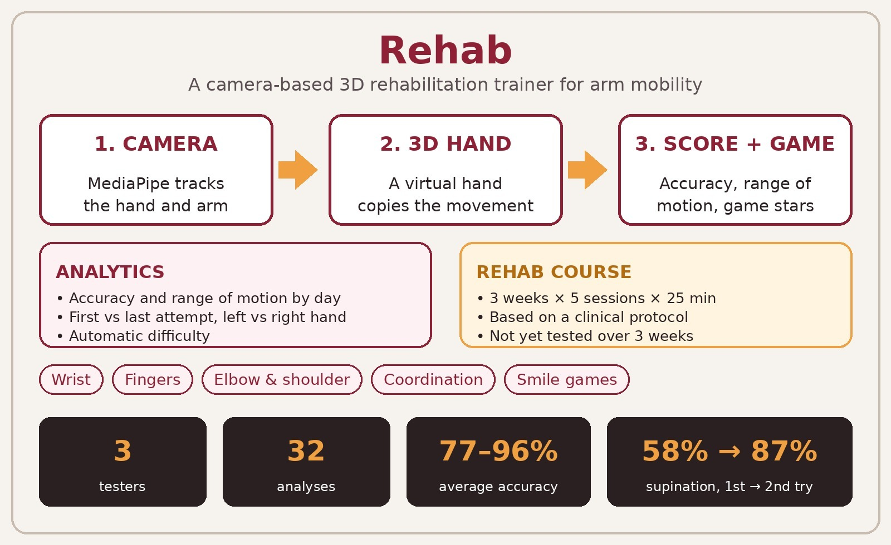

Rehab: A Camera-Based 3D Rehabilitation Trainer for Arm Mobility

In one sentence: I built a web trainer that scores rehab exercises from a webcam, and I tested it with 3 users (32 analyses): average accuracy was 77–96%.
The problem
After an injury, a doctor gives exercises that must be repeated many times a week. At home they are boring, nobody sees if the form is right, and progress is a feeling, not a number. Many apps show videos of exercises, but they do not check the movement.
How it works
The app has exercises for wrist, fingers, elbow, shoulder and coordination, and smile games. An analytics page shows accuracy and range of motion by day, first attempt against last attempt, left against right hand, and it can choose the difficulty automatically. There is also a course plan: 3 weeks, 5 sessions a week, 25 minutes each. I used MediaPipe Hands (Apache 2.0) and Three.js (MIT); I did not train a new model.
Results
Three users (A, B, C) used the app in one session each, 32 analyses in total. The baseline is the first attempt of the same exercise.
| Attempt (user C) | Supination ↑ | 3-joint exercise ↑ |
|---|---|---|
| First attempt (baseline) | 58% | 66% |
| Last attempt | 87% | 62% |
Average accuracy was 96% for A, 81% for B and 77% for C. Finger exercises scored 93–100%; rotation and combined movements scored lower (55–66% on the first try). Supination improved from 58% to 87%, but the 3-joint exercise got worse (66% to 62%). The 3-week course was not tested yet.

Limitations and ethics
Only three users took part, one session each, so the result can be wrong for other people. Most exercises were done once, so I cannot show improvement over time. The users were healthy; I did not test with patients. The camera measures movement only, not grip force. Rehab is not a medical device and does not replace a doctor. Testers are named A, B and C; no names, faces or videos are published. I used an AI agent to write code and to check the English.
Cite
@misc{rehab2026,
title = {Rehab: A Camera-Based 3D Rehabilitation Trainer for Arm Mobility},
author = {Adiya},
note = {FRP 2026, ISSAI, Nazarbayev University},
year = {2026}
}